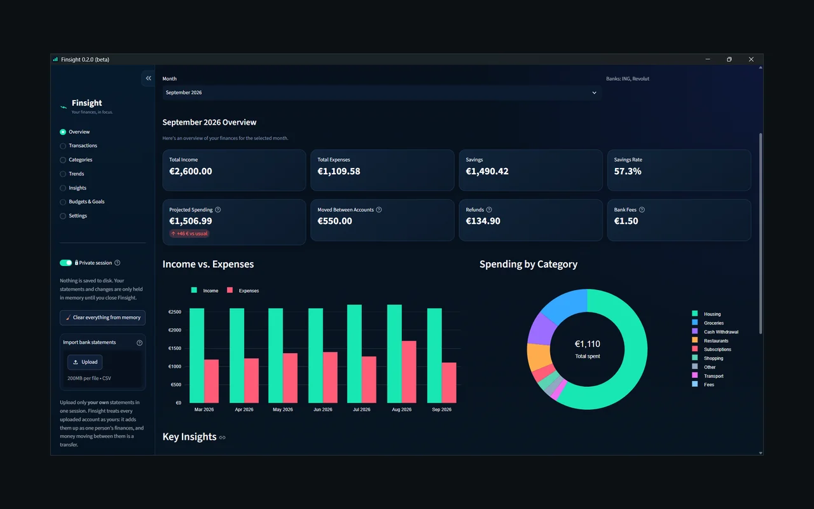
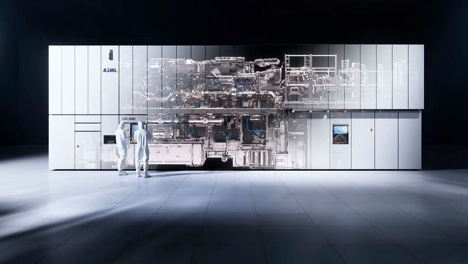
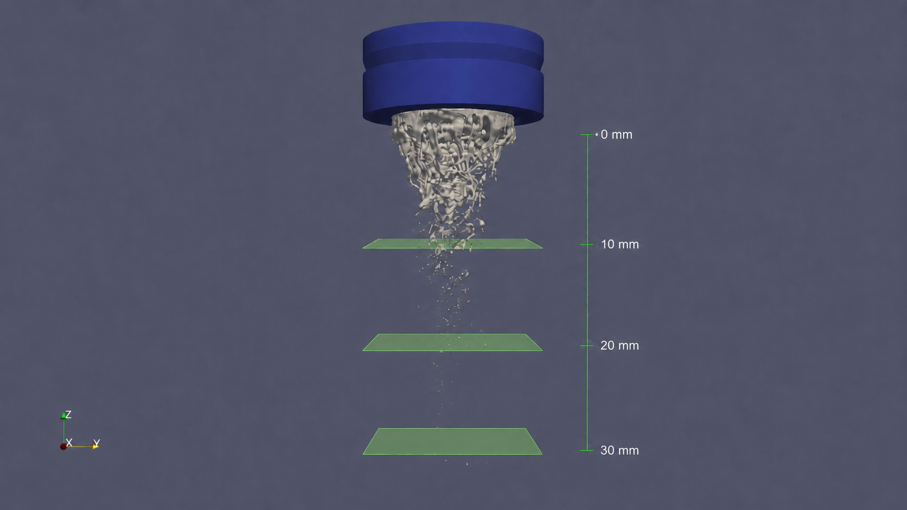
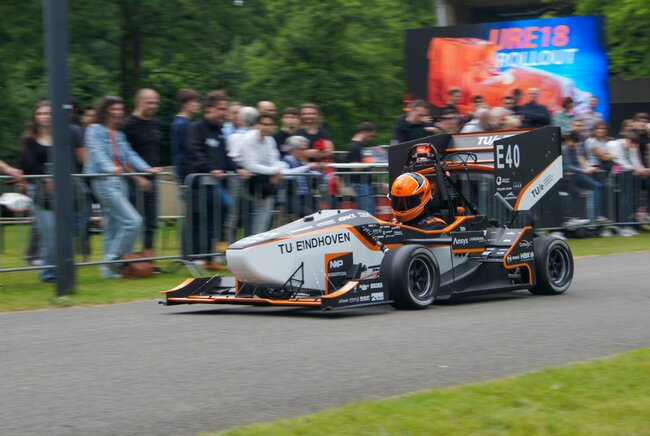
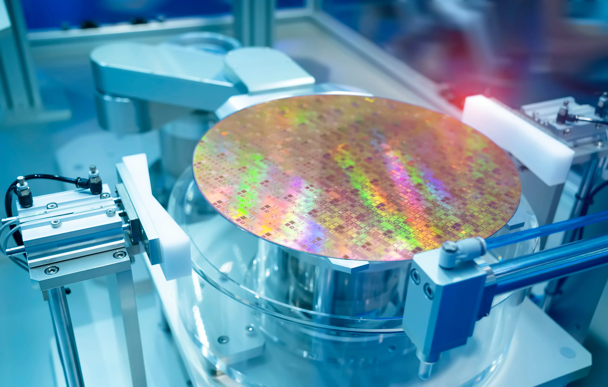

01
Strategy & Business
- Technology Strategy
- Competitive Analysis
- Financial Modelling
- Market Analysis
- NPV & Valuation
Mechanical Engineering · Technology Strategy · Data Analytics
Mechanical Engineering student interested in technology strategy, operations, and data-driven decision-making. I combine engineering insight with business analysis to solve complex problems and create value in high-tech industries.
I am a Mechanical Engineering student at Eindhoven University of Technology
with a strong interest in technology strategy, corporate finance, and
operational decision-making.
I enjoy working on problems where engineering,
data, and business intersect — from analysing production capacity and
supply-chain constraints to evaluating technology strategy and financial
trade-offs.
My focus is on turning technical and quantitative analysis into
clear, practical business insight.
Evaluating how technical capabilities translate into competitive and commercial advantage.
Using capacity, cost and scenario analysis to support business decisions.
Building quantitative models and tools to turn data into actionable insight.
BSc Mechanical Engineering · Eindhoven, NL
Elective Line: Product Development & Entrepreneurship
Specialization in Thermo-Fluid Engineering
Bachelor's Thesis: Determination of Optimal Transition Plane in Gas Atomization Simulation
Cost Engineer · Eindhoven, NL
Cost modelling, lifecycle analysis, sourcing decisions and financial assessment of engineering choices for a Formula Student race car.
Mechanical Design Engineer · Eindhoven, NL
Mechanical design and integration of an in-wheel motor assembly, balancing technical, manufacturing and packaging constraints.

A personal finance app that turns bank statements into clear insights, and runs entirely on your own computer.
An assessment of Airbus's plan to ramp up A320 production, through supply-chain and financial analysis.

Assessing the long-term resilience of ASML's market position through competitive, financial and technological analysis.

Determining a transition plane in gas atomization simulations by analyzing droplet evolution to balance numerical reliability and computational efficiency.

Design, manufacturing and cost engineering of mechanical systems for a Formula Student race car.

Analysing factory operations and production performance to identify bottlenecks, capacity constraints and opportunities for operational improvement.

Evaluating internal, joint-venture and external foundry capacity strategies through scenario modelling, NPV analysis and supply-disruption stress testing.
I'm open to discussing opportunities and projects at the intersection of engineering, technology and business.